built_v6_r12
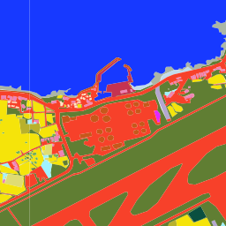
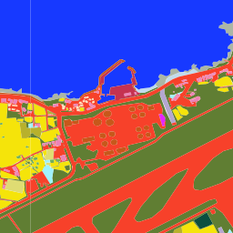
API가 많이 연결됐다는 사실과 원인 규명이 가능하다는 사실을 분리합니다. 이 스냅샷은 응답 원본·SHA·요청 hash를 보존하고, 미일치와 API 제한을 음성 증거로 바꾸지 않습니다.
HTTP 200이라도 API 본문 상태를 따로 봅니다. 표는 성공 / 유효한 무항목 / 오류를 분리합니다. VWorld NOT_FOUND는 인증오류가 아니라 해당 점의 무항목 coverage이며, 과거 GK2A 제한은 계속 실패로 남습니다.
| 소스 | 요청 | 성공 / 무항목 / 오류 | 반환 item | 판정 |
|---|---|---|---|---|
| 건축HUB 기본개요 | 111 | 111 / 0 / 0 | 8,794 | 8,794행 · 45 법정동 · 페이지 소진 |
| 건축HUB 철거·멸실 | 45 | 45 / 0 / 0 | 0 | 45 법정동 응답 · 조건 내 0행 |
| 환경영향평가 사업구역 | 1 | 1 / 0 / 0 | 13 | 제주 bbox 13 polygon · 후보 직접중첩 0 |
| GK2A 과거 관측일 | 6 | 0 / 0 / 6 | 0 | 과거 6시점 모두 최근 2일 제한 |
| GK2A 최신 허용시각 | 1 | 1 / 0 / 0 | 1 | 최신 grid 127,040값 |
| 환경부 토지피복 | 42 | 42 / 0 / 0 | 42 | 후보 14 × 2023–2025 = 42장 |
| VWorld 연속지적 | 257 | 256 / 1 / 0 | 256 | OK 256 · 무항목 1 · 오류 0 · 후보 PNU 14/14 · 오름 PNU 242/243 |
같은 법정동 건수는 탐색 문맥일 뿐 원인 근거가 아닙니다. B는 정확 필지와 변화 전후 시간축이 함께 맞을 때만 허용하며, PNU 출처가 충돌하면 해소 전까지 보류합니다.
| 후보 | 필지 근거 | 건축HUB | EIA 중첩 | 근거 | 판정 | 이유 |
|---|---|---|---|---|---|---|
| built_v6_r12 33.5086, 126.4787 | 5011012800108360000 single · source 1 | 86 정확 PNU 0 | 0 | U | 보류 | same legal-dong events and state layers are context, not parcel-time causal matches |
| built_v6_r13 33.4910, 126.5334 | 5011010400107770000 single · source 1 | 0 정확 PNU 0 | 0 | U | 보류 | same legal-dong events and state layers are context, not parcel-time causal matches |
| built_v6_r16 33.5109, 126.5751 | 5011011200107830004 single · source 1 | 205 정확 PNU 0 | 0 | U | 보류 | same legal-dong events and state layers are context, not parcel-time causal matches |
| context_v3_r01 33.3995, 126.3150 | 5011025339127520000 single · source 1 | 0 정확 PNU 0 | 0 | U | 보류 | same legal-dong events and state layers are context, not parcel-time causal matches |
| context_v3_r03 33.2816, 126.6922 | 5013025327103090001 single · source 1 | 0 정확 PNU 0 | 0 | U | 보류 | same legal-dong events and state layers are context, not parcel-time causal matches |
| context_v3_r05 33.3647, 126.2267 | 5011025032110600005 single · source 1 | 0 정확 PNU 0 | 0 | U | 보류 | same legal-dong events and state layers are context, not parcel-time causal matches |
| context_v3_r06 33.2458, 126.3944 | 5013012000111620000 single · source 1 | 0 정확 PNU 0 | 0 | U | 보류 | same legal-dong events and state layers are context, not parcel-time causal matches |
| dev_control_v3_r02 33.5087, 126.5747 | 5011013000128400002 single · source 1 | 0 정확 PNU 0 | 0 | U | 보류 | same legal-dong events and state layers are context, not parcel-time causal matches |
| oreum_v6_r04 33.3418, 126.6902 | 5013025324201580001 single · source 1 | 77 정확 PNU 1 | 0 | U | 보류 | same legal-dong events and state layers are context, not parcel-time causal matches |
| oreum_v6_r07 33.3265, 126.6820 | 5013025323116130001 single · source 1 | 0 정확 PNU 0 | 0 | U | 보류 | same legal-dong events and state layers are context, not parcel-time causal matches |
| oreum_v6_r08 33.3754, 126.6755 | 5013025324201990000 5013025324202000000 출처 충돌 · source 2 | 77 정확 PNU 0 | 0 | U | 보류 | parcel sources disagree on PNU; exact matches remain context until geometry and source-version conflict is resolved |
| oreum_v6_r10 33.3844, 126.6762 | 5013032024201400010 single · source 1 | 0 정확 PNU 0 | 0 | U | 보류 | same legal-dong events and state layers are context, not parcel-time causal matches |
| oreum_v6_r11 33.3153, 126.6604 | 5013025327123900000 single · source 1 | 0 정확 PNU 0 | 0 | U | 보류 | same legal-dong events and state layers are context, not parcel-time causal matches |
| oreum_v6_r17 33.3058, 126.7126 | 5013025325114010005 single · source 1 | 0 정확 PNU 0 | 0 | U | 보류 | same legal-dong events and state layers are context, not parcel-time causal matches |
공식 연도별 상태지도입니다. 색 변화는 분류 변화일 수 있으며 곧바로 실제 토지 변화나 원인을 뜻하지 않습니다.


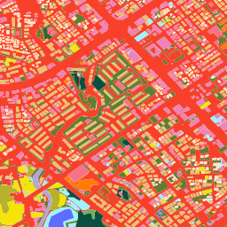
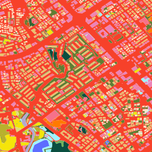
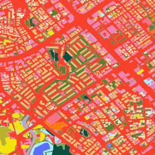
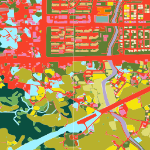
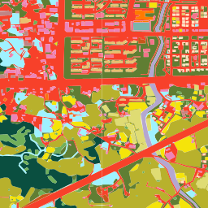
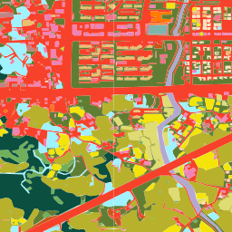
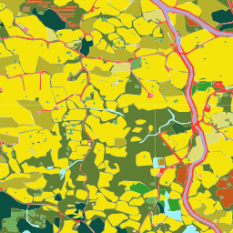
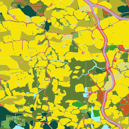
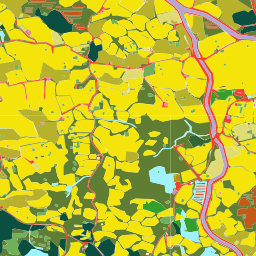
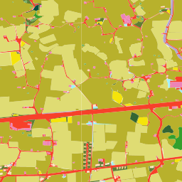
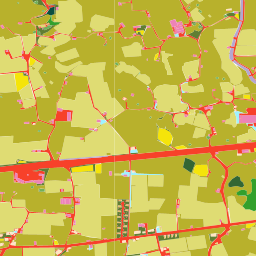
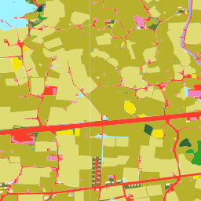
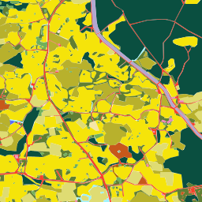
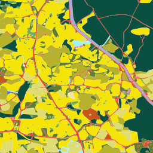
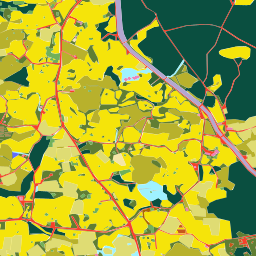
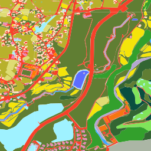
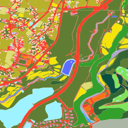
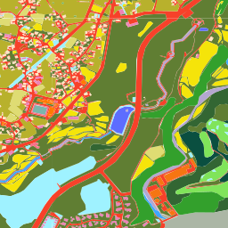
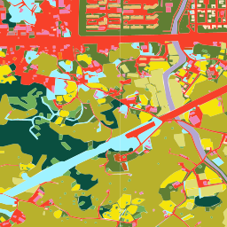
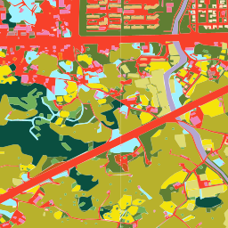
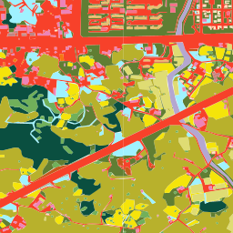
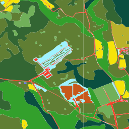
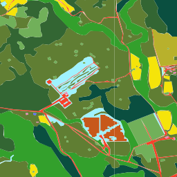
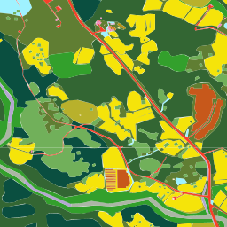
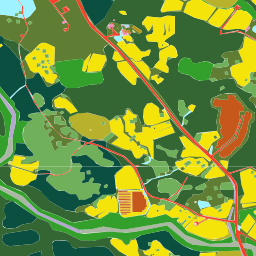
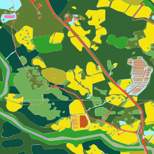
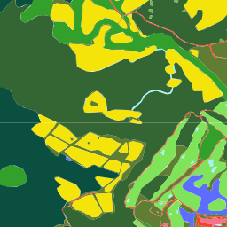
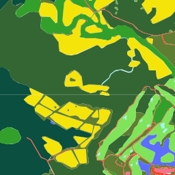
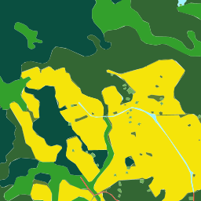
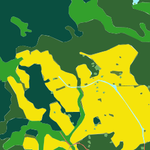
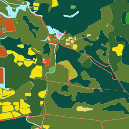
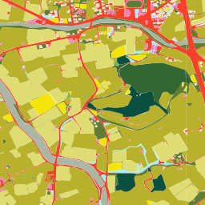
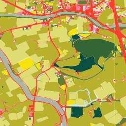
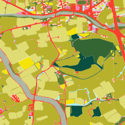